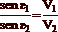
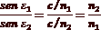
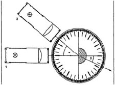

| Objetivo: |
Estudiar el comportamiento de un haz de luz al pasar de aire a vidrio.
Medir el ángulo de refracción en función del ángulo de incidencia, al pasar la luz de aire a vidrio.
|
|
| Introducción: |
|
Se denomina refracción luminosa al cambio que experimenta la dirección de propagación de la luz cuando atraviesa oblicuamente
la superficie de separación de dos medios transparentes de distinta naturaleza. Las lentes, las máquinas fotográficas, el ojo humano
y, en general, la mayor parte de los instrumentos ópticos basan su funcionamiento en este fenómeno óptico.
El fenómeno de la refracción va, en general, acompañado de una reflexión, más o menos débil, producida en la superficie que
limita los dos medios transparentes. El haz, al llegar a esa superficie límite, en parte se refleja y en parte se refracta, lo cual implica que los haces reflejados y refractados tendrán menos intensidad luminosa que el rayo incidente. Dicho reparto de intensidad se
produce en una proporción que depende de las características de los medios en contacto y del ángulo de incidencia respecto de la
superficie límite. A pesar de esta circunstancia, es posible fijar la atención únicamente en el fenómeno de la refracción para
analizar sus características.
Las leyes de la refracción
Al igual que las leyes de la reflexión, las de la refracción poseen un fundamento experimental. Junto con los conceptos de rayo
incidente, normal y ángulo de incidencia, es necesario considerar ahora el rayo refractado y el ángulo de refracción o ángulo que
forma la normal y el rayo refractado.
Sean 1 y 2 dos medios transparentes en contacto que son atravesados por un rayo luminoso en el sentido de 1 a 2 y e1 y e2 los
ángulos de incidencia y refracción respectivamente. Las leyes que rigen el fenómeno de la refracción pueden, entonces, expresarse
en la forma:
1.ª Ley. El rayo incidente, la normal y el rayo refractado se encuentran en el mismo plano.
2.ª Ley. (Ley de Snell) Los senos de los ángulos de incidencia e1 y de refracción e2 son directamente proporcionales a las
velocidades de propagación v1 y v2 de la luz en los respectivos medios.

Recordando que índice de refracción y velocidad son inversamente proporcionales la segunda ley de la refracción se puede escribir
en función de los índices de refracción en la forma:

O en otros términos:
n1 · sen e1 = n2 · sen e2 = cte (14.5)
Esto indica que el producto del seno del ángulo e por el índice de refracción del medio correspondiente es una cantidad constante
y, por tanto, los valores de n y sen e para un mismo medio son inversamente proporcionales.
Debido a que la función trigonométrica seno es creciente para ángulos menores de 90º, de la última ecuación se deduce que si el
ííndice de refracción ni del primer medio es mayor que el del segundo n2, el ángulo de refracción e2 es mayor que el de incidencia
e1 y, por tanto, el rayo refractado se aleja de la normal.
Por el contrario, si el índice de refracción n1 del primer medio es menor que el del segundo n2, el ángulo de refracción e2 es menor
que el de incidencia el y el rayo refractado se acerca a la normal.
Estas reglas prácticas que se deducen de la ecuación son de mucha utilidad en la representación de la marcha de los rayos,
operación imprescindible en el estudio de cualquier fenómeno óptico desde la perspectiva de la óptica geométrica.
|
|
|
| Desarrollo Experimental: |
Atención:
Cuida que en todos los experimentos parciales, el haz de luz de la caja luminosa incida siempre sobre el cuerpo exactamente en el
centro del disco óptico y que el cuerpo óptico no varíe su posición al mover la caja.
Montaje (Ver Figura 1)
- Coloca el disco óptico delante de ti sobre la mesa y pon el cuerpo óptico semicircular (el lado mate hacia abajo), exactamente sobre la línea vertical, entre las marcas, como se muestra en la Figura 1.
- Coloca el diafragma de una rendija en la caja luminosa sobre la parte de la lente, y ponla aproximadamente a 1 cm. del disco
óptico.
Experimento 1:
Comportamiento del haz de luz estrecho en la superficie de separación aire/vidrio
Conecta la caja luminosa a la fuente de alimentación (12V).
Desplaza la caja luminosa hasta que el haz de luz estrecho vaya exactamente sobre el eje óptico (línea de 0°, sobre la “normal al plano de incidencia”) (Figura 1- Ajuste).
Si la posición del cuerpo óptico y la caja luminosa es correcta, el haz de luz estrecho continúa discurriendo sobre el eje óptico después de su paso a través del vidrio.
Desplaza la caja luminosa hasta que la luz incida sobre el cuerpo óptico con un ángulo de 40° (con respecto a la normal al plano
de incidencia) (Figura 1: 2 - Primera Posición).
Observa atentamente el comportamiento del haz de luz estrecho al atravesar la superficie de separación aire/vidrio; anota lo que
observas.
¿Cómo se comporta la luz al salir del cuerpo de vidrio (en la superficie de separa vidrio/aire)? Anota lo que observas.
Compara el ángulo de incidencia a con el ángulo entre el haz de luz saliente (refractado) y el eje óptico (ángulo de refracción ß). Anota de nuevo lo que compruebes.
Experimento 2:
Determinación del ángulo de refracción en función del ángulo de incidencia a
El montaje es igual que en la primera parte del experimento (Figura 1).
Comprueba la posición del cuerpo óptico conforme al método descrito en la primera parte del experimento (incidencia y salida
de la luz exactamente a lo largo del eje óptico).
Desplaza la caja luminosa hasta que el haz de luz incidente forme exactamente un ángulo de 10° con la normal al plano de
incidencia (línea 0°).
Lee el correspondiente ángulo de refracción� ß, y anota su valor en la Tabla 1. Este es el ángulo entre el haz refractado y la normal al plano de refracción (eje óptico).
Repite este procedimiento para cada uno de los ángulos de incidencia a de la tabla 1, anotando siempre los ángulos de
refracción ß correspondientes.
Elige tú mismo otros tres ángulos de incidencia a y mide los ángulos de refracción ß. Anota los pares de ángulos igualmente en
la Tabla 1.
Haz incidir, finalmente, la luz bajo el ángulo de 0°. ¿Cuál es ahora el ángulo de refracción ß? Anota su valor.
Desconecta la fuente de alimentación.
|
| Resultados y Conclusiones: |
|
Comportamiento del haz de luz estrecho en la superficie de separación aire/vidrio
1) Comportamiento del haz de luz estrecho al atravesar oblicuamente la superficie de separación aire/vidrio:
2) Comportamiento del haz de luz estrecho al salir del cuerpo óptico:
3) Comparación de los ángulos de incidencia y refracción.
Determinar el ángulo de refracción ß en función del ángulo de incidencia a.
Con los resultados obtenidos
1) Describe, de acuerdo con tus observaciones, cómo se comporta el haz de luz estrecho al atravesar oblicuamente la superficie de separación aire/vidrio.
2) Compara entre sí los ángulos de incidencia a y los de refracción ß correspondientes, de la Tabla 1. Formula el resultado con tus propias palabras.
3) ¿A qué resultado te conduce la medición con un ángulo de incidencia de 0°? Intenta razonar el resultado.
4) Intenta Formular, en base a tus medidas y a las condiciones del experimento, una ley para el paso de la luz a través de la superficie de separación aire/vidrio.
5) ¿Por qué no se refracta de nuevo el haz de luz al salir del cuerpo óptico semicircular?.
|
|
|
Figura 1:
1-Ajuste
2- Primera Posición |
|  |
| |
|